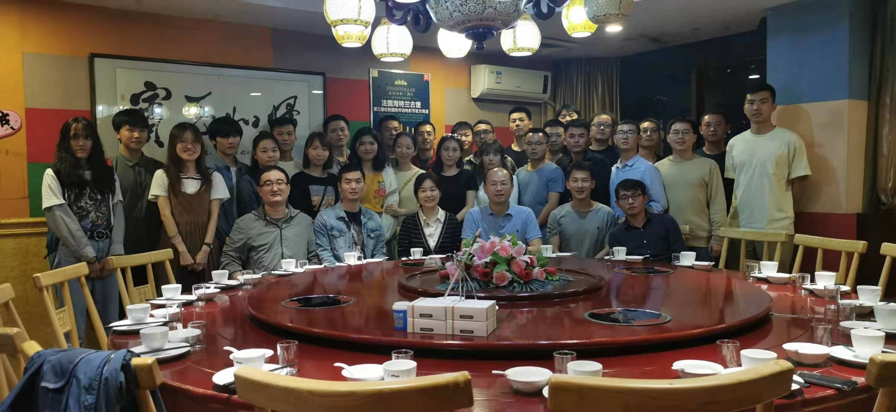

|
National University of Defense Technology
College of Computer
Cai's Lab
Computer Networks
Network Security
Artificial Intelligence
 About UsCai's Lab is led by Prof. Zhiping Cai at the College of Computer, National University of Defense Technology (NUDT), Changsha, China. Prof. Cai visited iQua Lab in 2013, led by Prof. Baochun Li. He received his bachelor's, master's and Ph.D. degrees in computer science and technology from NUDT in July 1996, April 2002 and December 2005, respectively. The group's research focuses on computer networks, network security, and artificial intelligence. Prof. Cai has published over 100 academic papers and received multiple best paper awards. News
{% assign sorted_news = site.data.news.news | sort: "date" | reverse %}
{% for item in sorted_news limit:6 %}
{% endif %}
{{ item.date }}
{% if item.venue and item.venue != "" %}
[{{ item.venue }}]
{% endif %}
{% if item.link and item.link != "" %}
{{ item.text }}
{% else %}
{{ item.text }}
{% endif %}
SponsorOur research is currently funded by the following project:
Outstanding Graduates
Join UsGraduate students, undergraduate students, postdocs, and research assistants with Computer Science backgrounds are welcome to join our group. Please contact us at zpcai@nudt.edu.cn. |